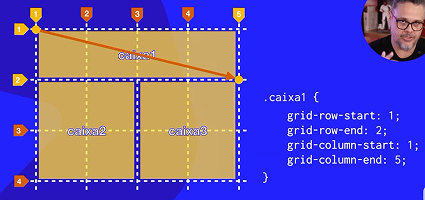

Grid Layout - Propriedades de container
O que é um Grid Layout?
O Grid Layout é uma forma de organizar os elementos na tela como se fosse uma tabela invisível, com linhas e colunas.
Você escolhe quantas colunas e quantas linhas o seu layout vai ter, e onde cada item vai ficar.
Quando configuramos um elemento pai com display: grid, ele se torna um container de grade, e os elementos filhos passam a ser organizados de acordo com essa grade.
Ao usar apenas display: grid, sem definir colunas com grid-template-columns, o Grid cria, por padrão, uma única coluna. Os itens filhos são empilhados verticalmente, um embaixo do outro.
Quando você usa grid-template-columns ou grid-template-rows, cada valor que você coloca representa uma coluna ou uma linha.
Infográfico


Propriedades do container para Grids
Como você define o tamanho?
Você pode usar diferentes unidades: fr → Fração do espaço disponível, px → Tamanho fixo em pixels, % → Porcentagem do espaço do container pai e auto → Ajusta de acordo com o conteúdo
Obs.: O container pai vai crescer automaticamente conforme o conteúdo interno e o que você definiu nas linhas e colunas. Se você usar fr, o grid divide o espaço que tem disponível. Se você usar px, o tamanho será fixo, e o container pode ficar maior se os itens não couberem.
O que é gap no CSS Grid?
gap é o espaço entre os itens do grid. É como o “vão” entre os tijolos em uma parede. Ele não afeta o tamanho dos itens, apenas a distância entre eles.
Tipos de Gap
- gap: define ao mesmo tempo o espaço entre linhas e colunas
- row-gap: define apenas o espaço entre as linhas
- column-gap: define apenas o espaço entre as colunas

Align-items vs Justify-items
align trabalha no eixo vertical (colunas, de cima para baixo) enquanto justify trabalha no eixo horizontal (linhas, da esquerda para a direita). Essas duas propriedades são usadas dentro do grid (container pai), controlando como cada item filho se posiciona dentro da sua célula.
Align itens
align-items / justify-items → Alinha os itens individuais


Justify itens
Align-content vs Justify-content
Essas duas propriedades servem para alinhar o conjunto completo de linhas ou colunas dentro do container.
Mas atenção:
Para que elas funcionem corretamente, o container pai precisa ter um tamanho definido (largura, altura, ou ambos). Isso porque elas só atuam quando sobra espaço dentro do container.
Align content
Justify content
Grid layout simplificado com função
Usando unidade fracional
Use fr sempre que você quiser um layout que se adapte automaticamente ao tamanho do container, sem depender do conteúdo ou de tamanhos fixos.
Reserve px ou auto para casos específicos, como uma barra lateral fixa ou um botão que deve se ajustar ao texto.
grid medidas mistas
Neste ultimo exemplo temos o primeiro item com uma largura fixa de 100px, o segundo item com 20% de 1500px que é 300px (esses 1500px é o tamanho do container pai e perceba que é 20% do valor total e não doque sobrou) e as duas frações se baseia no valor que sobrou após as duas primeiras colunas ocuparem o espaço delas. Ou seja o container pai tem 1500px, e utilizamos 400px desses 1500 logo só temos 1100px para fracionar
grid-auto-rows
Grid-auto-rows define a altura padrão das linhas que o grid cria automaticamente, ou seja, linhas que você não declarou manualmente com grid-template-rows. Se você não usar grid-auto-rows, essas linhas extras vão ter uma altura automática (baseada no conteúdo) — o que pode deixar o layout desorganizado ou inconsistente.
Exemplo: grid-auto-rowsfrid-auto-flow
grid-auto-flow controla a direção em que os itens são inseridos automaticamente no grid, quando você não especifica a posição deles.
Row (padrão): os itens são colocados linha por linha (da esquerda para a direita, depois para a próxima linha). Column: os itens são colocados coluna por coluna (de cima para baixo, depois para a próxima coluna) os itens serão preenchidos de cima para baixo, criando novas colunas conforme necessário. E aqui também podemos utilizar de um artificio para padronizar o tamanho de novos itens inseridos com o grid-auto-column
Propriedades de Itens no Grid layout
Definindo grid Areas
Para definir a área que um item deve ocupar no grid, você precisa informar onde ele começa e onde ele termina. Em outras palavras, é necessário saber: a linha de início, a linha de fim, a coluna de início e a coluna de fim.
Veja na imagem a seguir como essas posições determinam exatamente o espaço ocupado por um item dentro do grid.
A seguir config de container e de itens para o grid acima
Uma forma de simplificar a escrita das posições no grid é usar as propriedades grid-row e grid-column, em vez de escrever separadamente grid-row-start, grid-row-end, grid-column-start e grid-column-end.
Com grid-row e grid-column, você pode indicar o início e o fim em uma única linha.
Veja na imagem a seguir como essa simplificação funciona na prática.
E se você quiser simplificar ainda mais, pode usar a propriedade grid-area.
Com ela, você define a posição do item no grid em uma única linha, seguindo esta ordem: linha de início, coluna de início, linha de fim, coluna de fim.
Ou seja, a sintaxe completa é:
grid-area: row-start / column-start / row-end / column-end;
Veja na imagem a seguir como essa forma compacta ajuda a organizar o posicionamento de maneira mais rápida.